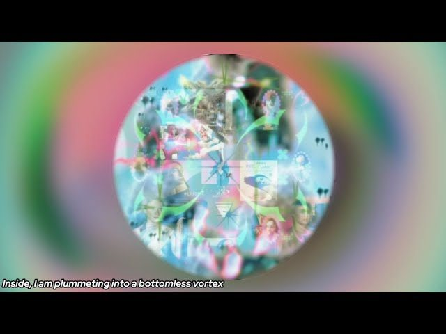
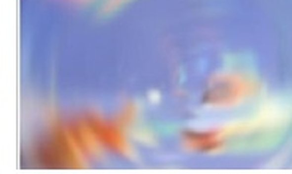
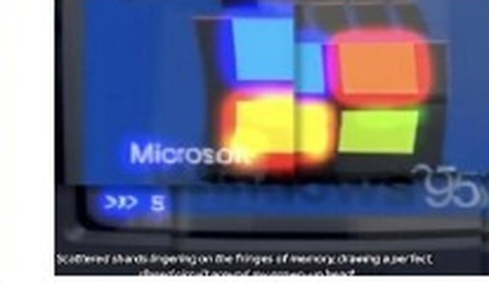
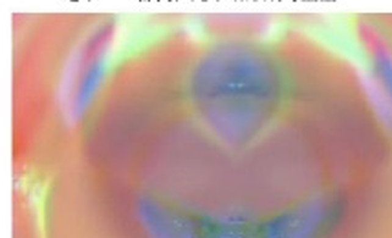
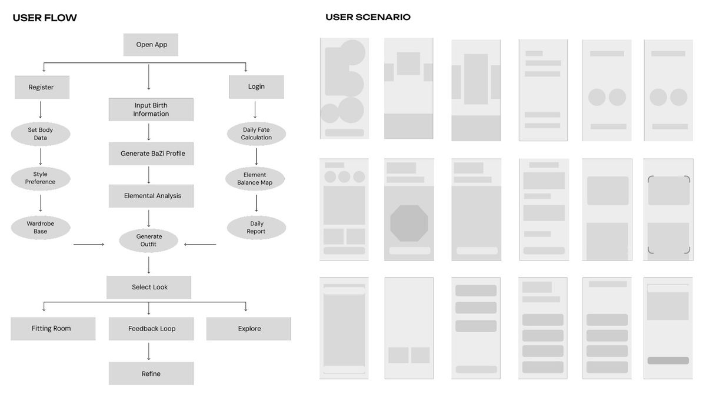

刘盈铄
以戏剧与影视文本训练为基础，开展原创短片写作与AI辅助内容创作。独立编剧《夜半潮汐》，现推进女性向竖屏漫剧前期策划，并具备英文内容研究与海外短视频制作实践。
从岗位要求出发，呈现相关经历与实践。
围绕故事创作、AI辅助制作、内容复盘与跨文化研究组织案例。项目状态按实际进度标注，方法规划与已完成作品分开展示。
| 岗位要求 | 我做过的事 | 案例 |
|---|---|---|
| 女性向题材题材感知 | 第一季是女性向题材项目；我负责判断它的 Hook、Cliffhanger 与角色一致性。 | 漫剧策划 |
| AI 漫剧生产策划 · 导演视角 QC | 规划60集女性向竖屏漫剧的故事、角色、视觉方向与分镜衔接，当前处于前期制作。 | 漫剧策划 |
| 故事与剧本判断题材 · 人设 · 钩子 · 反转 | 受过剧作结构与影视文本分析训练；独立编剧短片《夜半潮汐》，曾投递FIRST青年电影展超短片单元。 | 原创剧本 |
| 内容工作流与产能产出 · 质检 | 将LLM辅助脚本、图像生成、AI视频与剪辑组织为可复用流程，人工检查脚本节奏、角色与画面风格。 | TikTok |
| 内容反馈与复盘观察 · 调整 | 结合完播、互动与评论反馈调整后续选题、开头钩子与叙事节奏。 | TikTok |
| 工作流搭建与自动化Agent · 自动化 | 将Temu与TikTok Shop项目的趋势研究、AI辅助设计、内容包装、上架前检查和数据复盘组织为工作流。 | 运营流程 |
| 国际化与跨文化英语 · 海外受众 | 具备英文授课与美区内容实践经历；在海外发行实习中参与英文材料和市场资料整理。IELTS 6.0。 | TikTok |
| 审美与视觉把控美学 · 一致性 | 实验AI影像《Spiral》：围绕记忆与身份，以视觉母题、剪辑和声音组织情绪变化。 | Spiral |
《夜半潮汐》：短片独立编剧
独立完成短片《夜半潮汐》的剧本创作，曾投递FIRST青年电影展超短片单元；投递不等同于入围或获奖。
女性向竖屏漫剧的前期策划
女性向 · 竖屏 9:16
正在推进女性向竖屏漫剧的前期策划，规划一季60集。围绕故事、角色、视觉方向与分镜梳理制作衔接；尚未发布剧集。
01制作衔接规划
梳理故事、脚本、角色、视觉与分镜之间的输入和交付要求，区分策划、制作与审核环节。
02内容与视觉审阅
将人物动机、开场钩子、集末悬念、叙事节奏和角色一致性列为检查项。
03可靠的流程
设置角色造型与单集审阅的确认环节；规划集数与实际完成状态分开记录。
美区TikTok：从选题、制作到发布复盘
2025.05—2025.08，独立负责美区TikTok AI视频账号的选题、脚本、画面制作、剪辑与发布，并结合内容反馈调整后续方向。
趋势洞察
追踪海外榜单、评论与对标账号——记录观众正在讨论的情绪，而不只是话题标签。
选题判断
以「谁在看 / 为什么划走 / 看完带走什么」筛选；剔除没有观看理由的热点。
剧本
用模型辅助初稿，人工调整开头、转折、结尾与叙事节奏。
画面
用提示词模板和风格参考约束视觉方向，并人工检查角色与画面一致性。
发布与观察
完成发布并观察完播、互动与评论反馈。
数据复盘
把内容反馈整理为下一轮选题与脚本调整的参考。
当前制作方法与工具实践
以下为当前工具实践与人工检查方法，不代表每个工具都用于2025年的账号项目。模型生成后仍需二次编辑，重点检查叙事、角色与画面风格。
LLM 起草
ChatGPT / Claude / Gemini辅助构思与初稿；人工编辑钩子、节奏与结尾。
文生图
Midjourney、Stable Diffusion / ComfyUI辅助图像制作；配合提示词与风格参考。
AI 视频
Seedance / Runway辅助动态画面制作；人工检查动作与风格漂移。
剪辑与发布
CapCut整理画面、声音与字幕，完成剪辑与发布前检查。
AI短剧前期制作：交付与检查框架
以下是工作方法框架，说明计划关注的交付物与检查标准，不是已完成的整季交付记录。
| 交付物 | 内容 | 必须达到的标准 |
|---|---|---|
| 题材与受众 | 品类、目标观众、核心爽点、对标作品与差异点 | 一句话说清「谁在什么心情下点开它」 |
| 案例库 | 拆解优秀短剧与 AI 短剧，提炼为可复用的开篇与反转模板 | 每个模板都标明具体剧集与生效的秒数 |
| 人设卡 | 身份、欲望、秘密、关系张力、说话方式与视觉锚点 | 遮住名字，观众依然知道这是谁 |
| 钩子表 | 每一集的开篇悬念、中段反转与结尾钩子 | 结尾钩子要让人立刻点下一集 |
| 视觉资产库 | 角色一致性提示词、场景资产、光线与色彩基线 | 任意三集看起来都是同一部剧 |
| 产出与复盘 | 每周集数、标题矩阵、封面方案、完播与留存指标 | 每一集都回答「下一步该改什么」 |
跨境运营流程：明确输入、交付与复盘
跨境电商 · 2025.08 – 至今
围绕Temu与TikTok Shop项目，将趋势研究、AI辅助设计、内容包装、上架前检查与数据复盘组织为可重复执行的工作流，明确环节交付与人工确认点。
趋势输入
市场与趋势信号作为每个周期的起点进入工作流。
AI 辅助设计
借助 AIGC 工具生成并迭代原创产品设计。
内容包装
为每个商品准备视觉物料与文案。
上架前检查
检查商品资料与内容是否满足上架要求；不替代平台或专业审核。
数据复盘
结果回流，进入下一轮「趋势 → 设计」周期。
Spiral —— 一部实验 AI 影片
记忆 · 身份 · 媒介残影
一部关于「在屏幕里长大的人如何记起自己」的短片。碎片化的数字影像、梦境逻辑与层叠投影，把「被扭曲的记忆」变成可以亲眼看见的东西——情绪主线从低分辨率的童年碎片，一直走向消融的光。

在 YOUTUBE 观看

- 让抽象可被看见。「被扭曲的记忆」无法直接拍摄，于是我把它拆成一组视觉母题——屏幕眩光、投影褶皱、家庭影像、破碎的身体。
- 用画面控制情绪。节奏、色彩偏移与叠层决定观众是被拉进来还是被推开——取舍依据是情绪，而不是好看。
- 画面自带情绪弧线。从低分辨率碎片，经反复滑动与凝视，到消融于光——是一条完整的情绪曲线，而不是剧情梗概。
从抽象主题到可以直接喂给 AI 的提示词
这个项目真正训练的是把「我想说什么」翻译成「画面里放什么」。翻译的终点，恰好是 AI 生成所需的输入格式——主题标签、角色、场景与镜头描述。

01四步翻译法
- 情绪入口 — 先定观众进来时的感受：创伤、错位、被塑造。
- 视觉母题 — 把这种感受固化为 4–6 个反复出现的画面元素。
- 材质与光线 — 让质感与光线决定观众是被拉近还是被推远。
- 节奏 — 沿情绪曲线而非叙事时间线排列母题。
02它产出的提示词资产
- 主题标签 — 记忆扭曲 / 身份残影 / 被媒介塑造。
- 角色 — 年轻女性，记忆破碎，安静而紧绷。
- 场景 — 室内投影、柔软织物、冷暖混合光、屏幕眩光。
- 镜头 — 手部特写、缓慢推进、凝视静止、梦境般的转场。
补充作品 · UI / UX
FateWear
推荐驱动的移动产品
一款把抽象兴趣标签翻译成每日穿搭建议、幸运色与单品推荐的娱乐向 App。真正的问题不在于体系「准不准」，而在于如何把一套复杂的象征体系，变成用户三秒读懂、并愿意照做的推荐。
示意性概念界面——数值均为示例数据；仅供娱乐。
- 用户研究。通过访谈梳理用户从抽象兴趣标签到具体穿搭选择的理解障碍，并将发现转化为界面与反馈机制的设计问题。
- 设计一件仪器，而不是算命。界面被刻意做成精密工具——能量分布、匹配度评分、每日报告——把一种文化兴趣驱动的穿搭思路，呈现为透明、可解释的推荐（仅供娱乐，不作任何功效承诺）。
- 反馈流程设计。输入、画像、建议、单品选择与反馈组成概念流程；界面数值为示意，不代表实际推荐效果。
从访谈到推荐流程概念
将用户动机、信息结构与反馈环节组织为可理解的产品流程。此案例作为用户研究与界面设计的补充。

访谈关注用户如何理解建议、做出选择，以及希望获得什么反馈。
将兴趣标签映射为色彩、材质与单品建议，用界面说明推荐逻辑；仅供娱乐。
同一套机制可以变成互动测试、短视频系列、创作者共创选题，或电商的选品与内容包装。
高保真界面与设计系统
引导页 · 出生信息输入 · 每日能量面板 · 风格偏好 · 单品推荐 · 详情与反馈
匹配度环 · 日历能量点 · 五行雷达 · 商品卡片 · 主操作按钮
高饱和主色对应五行以区分能量类型；中性底色保证信息易扫读
用户早晨只有几秒——今日建议、幸运色与匹配度都在首屏可读
以影视叙事训练为基础，持续实践AI辅助内容制作。
希望参与AI短剧的选题、创作、制作衔接与内容复盘。
意向：TikTok · 上海。